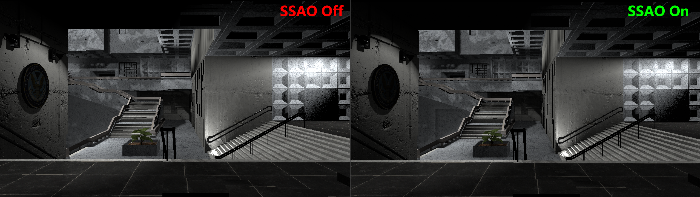
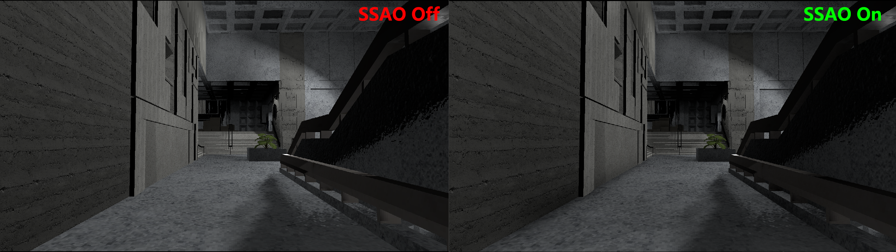
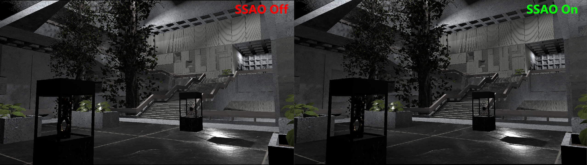
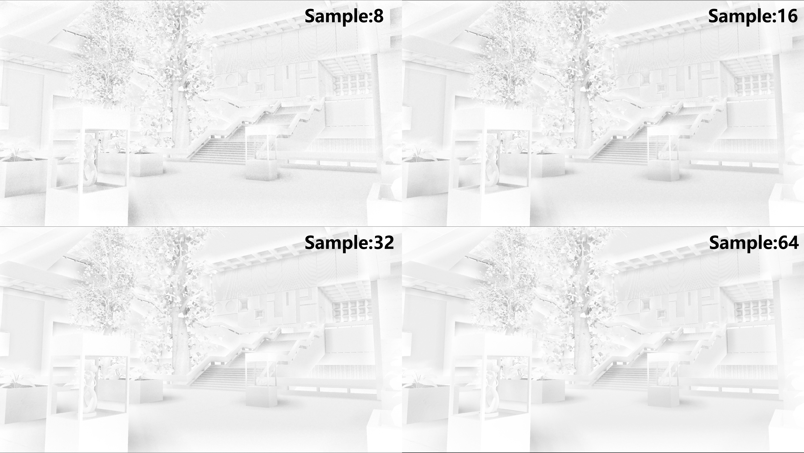
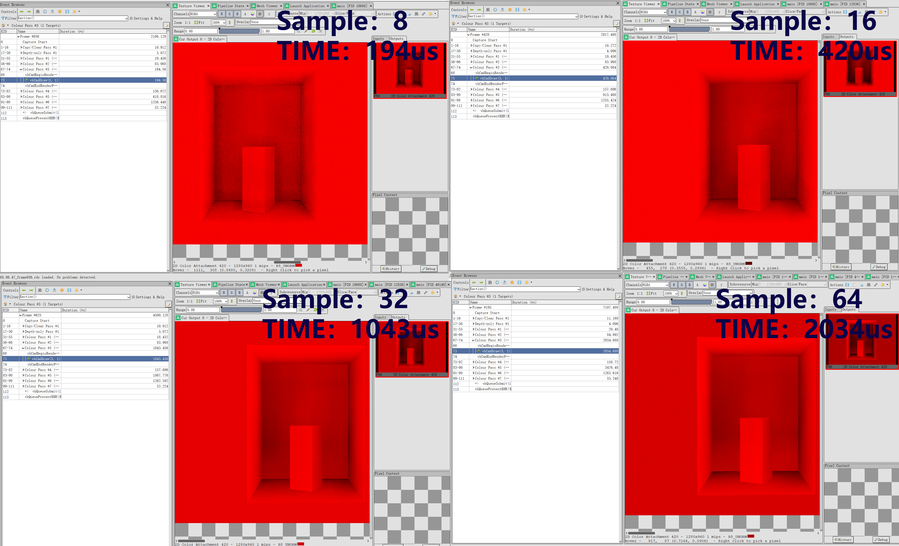
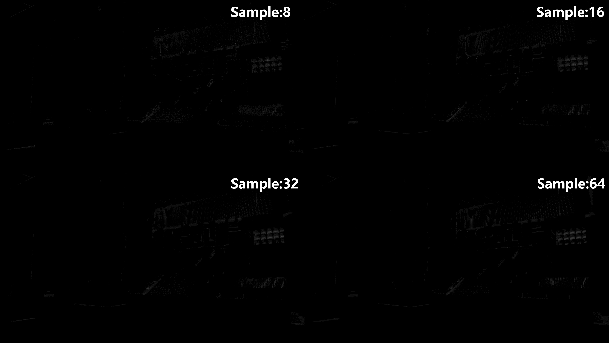
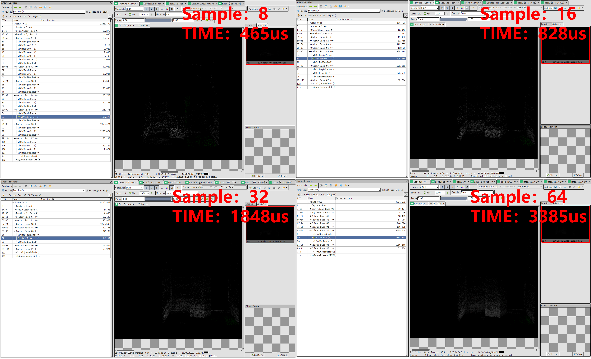
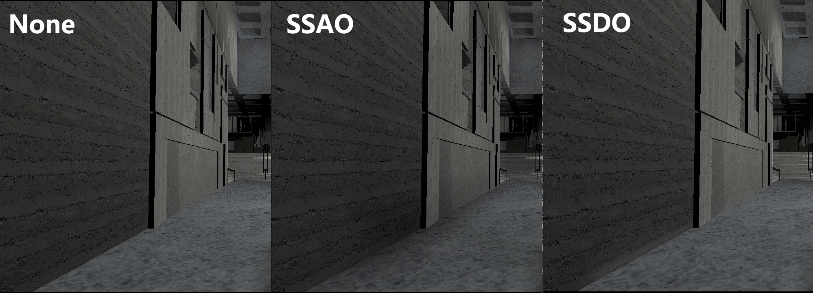

In the final project, I integrated Screen Space Ambient Occlusion (SSAO) and Screen Space Directional Occlusion (SSDO) into the rendering engine. As both techniques rely on G-buffer data, the rendering pipeline was restructured to use a deferred rendering architecture.
1. Poliigon https://www.poliigon.com include
Texture files name start from Poliigon
2. TexturesCom https://www.textures.com/ include
Texture files name start from TCom
3. TextureHeaven https://polyhaven.com/textures include
Texture files name start from polyheaven
4. TextureHeaven https://www.sharetextures.com include
Texture files name start from ST
5. Tropical Plant monstera deliciosa https://sketchfab.com/3d-models/tropical-plant-monstera-deliciosa-2fa12ba0af5442c9af8f9bead1a7d020
--debug, --no-debug -- required -- Turn on/off debug and validation layers.--physical-device name -- required -- Run on the named physical device--drawing-size w h -- required -- Set the size of the windows of w h--scene scene.s72 -- required -- load scene from scene.s72--camera camera001 -- required -- active camera is camera001--headless -- required -- start exe with headless mode --cull CULLMODE -- required -- choose your cull mode, now only has NONE | NORMAL--exposure EXPOSURE -- required -- Select Exposure Compensation Value--tonemap MODE -- required -- replace MODE with tonemap mode you want to use, for now only support:linear, gamma, reinhard, aces--ssao SAMPLE COUNT -- required -- turn on ssao and decide the sample counts(max:64)--ssdo SAMPLE COUNT -- required -- turn on ssdo and decide the sample counts(max:64)Document the keyboard and mouse controls used to control your viewer when run interactively. Note that the controls below are placeholders not requirements.
To support deferred rendering, I restructured the original forward rendering pipeline. The current rendering pipeline executes in the following order:
First, the shadow map pass is rendered. Next, the G-buffer pass is generated.
Then, using the G-buffer and shadow information, the direct lighting buffer is computed.
After that, SSAO and SSDO are applied.
Finally, the combined pipeline integrates all the intermediate results to produce the final rendered image.
To make the SSAO effect more pronounced, I currently apply it by directly multiplying it with the final output color.




As shown in the figure below, the cost of the SSAO pass (excluding the blur pass) shows a positive correlation with the number of samples.

I incorporate SSDO as part of the indirect lighting contribution in the final pixel color.

As shown in the figure below, the cost of the SSDO pass (excluding the blur pass) shows a positive correlation with the number of samples.

